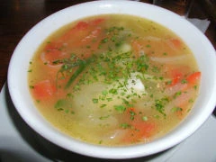

Caldillo de Congrio

Description
This recipe is for 4 servings
Ingredients
- 2 pounds cod, cut into 4 steaks
- salt
- ¼ cup lemon juice
- 2 carrots, scraped and thinly sliced
- 2 pounds small potatoes, peeled and thinly sliced
- 2 medium onions, halved and thinly sliced
- 2 cloves garlic, chopped (optional)
- freshly ground pepper
- ¼ teaspoon oregano
- 1 cup dry white wine
- 4 cups stock
- 4 tablespoons olive oil
Steps
- Put the fish steaks into a casserole, preferably earthenware, large enough to hold them in a single layer.
- Season with salt and the lemon juice.
- Cover with a layer of carrots, then a layer of half the potatoes, then the onions and garlic, and the rest of the potatoes.
- Season with salt, pepper, and oregano.
- Pour in the wine, fish stock, and olive oil.
- Bring to a boil, reduce the heat, and simmer until the potatoes and carrots are tender, about 30 minutes.
- Serve in soup bowls accompanied by crusty bread and butter. With the addition of dessert, or cheese, this makes a splendid lunch or dinner.